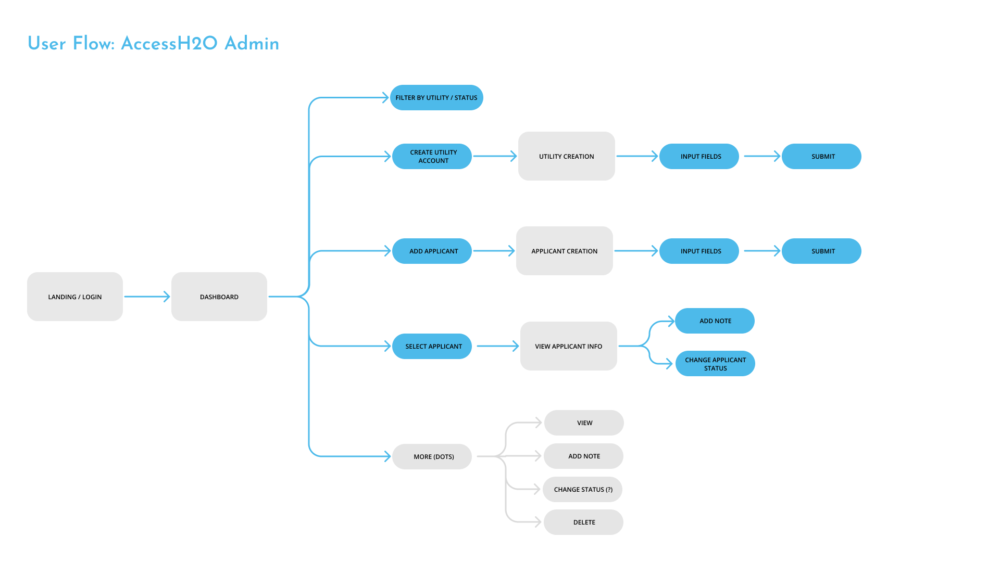

Access H2O
Timeline: 8 Weeks
Role: Product Designer
CONTEXT
AccessH2O is a non-profit that provides financial assistance to families who are unable to fully pay their water utility bills. Applicant information and documents must be coordinated between the organization and water utility companies. Email was the primary method used to communicate customer information and the status of an application. There was so central location where all this information was stored so the workflow to process applications became very confusing and cumbersome.
TEAM
This project was a part of Bits of Good, a student organization that creates web-based solutions for local non-profits in Atlanta. As a product designer, I worked together with the project's product manager and engineering manager to lead a team of developers in building the product.
Research Goals & Questions
Goals
- Establish target audience
- Eliminate pain points during the user journey
Questions
- Who will be the primary users of our product?
- What frustrations do they currently face in their process?
- What format of data representation would best fit their needs and workflow?
Participants & Research Method
Users
- AccessH2O Staff
- Utility Company Staff
Interviews
We conducted user interviews with both the director of the non-profit and staff members from utility companies. Speaking with the director of AccessH2O helped us to define core requirements of the web-app as well as pain points in their workflow. We also talked with staff from utility companies to hear about frustrations from their perspective.
Key Findings
1. No existing central location to keep track of applicants and their information
All information and inquiries for customer information was communicated through email. This often led to long email chains or missing pieces of information. The statuses of applicants were also kept as a spreadsheet that was prone to disorganization.
2. Both users need to track each application and its status in the review process
AccessH2O works with cities across the United States. They must be able to keep track of applicants from all of those sites. Each utility company want to see the applicants in their zone that are working with AccessH2O.
3. Utility companies need to submit various pieces of information and documents for each applicant
An important consideration was how to manage all the necessary personal information and documentation of the applicants. There was a need to both intake all the information (without allowing omission of a certain piece) as well as display the information for review.
Solution & Mockups
User Flow
Dashboard to see all applicants and their status with sort and filter
The central page of the web-app is a dashboard with a view of all the applicants. It allows users to sort and filter applicants by helpful factors like application status, city and date.

Applicant information form + review
This page is the primary form where utility companies can input the necessary information and documents required by AccessH2O. The results of the form are then available as a review of each applicant.